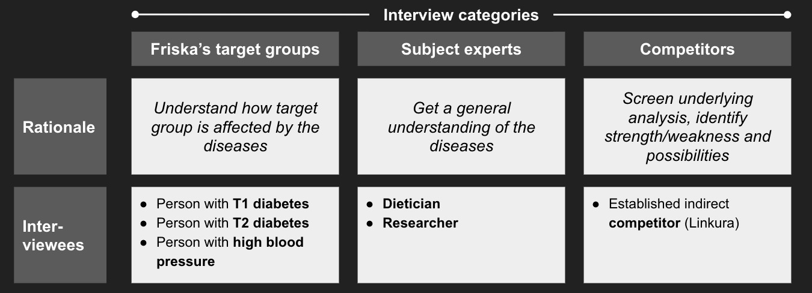
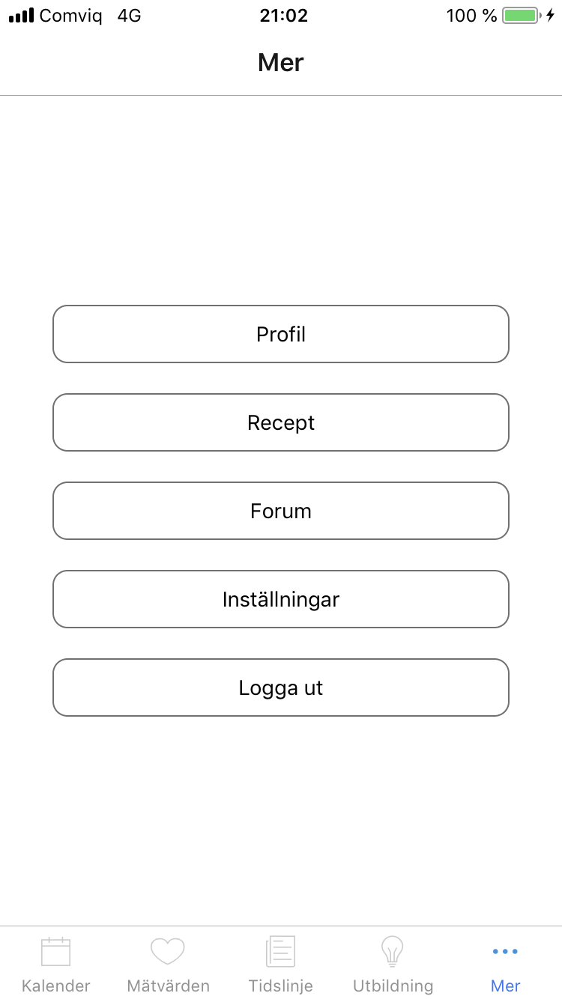

Friska
Friska is a start-up focused on bridging the gap between metabolic diseases and digitalization. Their solution aims at significantly increase its users well being and empowering them with the tools needed for self-help. By enabling continuous measurements, first-class presentation and ease of use, Friska wants to bring knowledge and real time insight into the very specific metabolic processes happening in the body. By integrating intelligent technology as well as human coaching and guiding, Friska strives to offer a digital app suitable for tomorrow's healthcare system.
This project was carried out to investigate two main themes, one being how to commercially deploy such a value offering and second how to design the interface and identify desired functionality towards clients of the Friska app.
The main problem statement can be formalized as:
“How should Friska be positioned in the commercial ecosystem of the Swedish healthcare system?”
“How could a first iteration end-user interface look like and what functions should be included?”
Pre-study
In the pre-study phase we conducted contextual inquiries in the form of interviews, some of the interviews were done over the phone and others were done face-to-face The interviewees and the purpose of interviewing them is presented below:
The main findings from the contextual inquiry phase:
We also performed a stakeholder analysis to be able to place Friska in the current marketplace

Workstreams
Since the problem was split into two parts, we devided to split our workforce into two teams a.k.a workstreams; the business and the tech workstream.
Business workstream
The Business workstream worked iteratively in five 2-week sprints to investigate the business ecosystem
We have assessed 3 business setups and all seem tricky to pursue in today’s climate given Friska’s current strategy
Getting accreditation from Swedish counties is possible but likely not feasible given the current legislative climate
Friska should be able to show a proven treatment, a functioning digital solution and financial benefits before going to market.
The key factors for success are:
Tech Workstream
The Tech workstream built an application through an iterative design process taking key insights from end users and Friska
Low-fi prototype
Following the specifications we got from Friska, we started drawing low-fi prototypes, mostly to get a first feel of what we were looking for.
This is the resulting low-fi prototype:
Hi-fi prototype
After discussing and improving upon the low-fi protoype we landed on this hi-fi protoype created in Adobe XD.
The final version of the hi-fi protoype is available here
And it is also embedded below, although it might render very slowly, beware!
Some sample images of the prototype:
Final application
The final application was built with react-native and firebase for persistent storage. It is completely based upon the hi-fi prototype, with limited functionality, further addressed in the final report.


Conclusion
Friska should prioritize development efforts, assess alternative ways of marketing and solve the key success factors.
The suggested path forward for Friska: